01
Planejamento
Mapeamos os resíduos da operação, os requisitos regulatórios aplicáveis e os riscos ocupacionais e ambientais — antes do primeiro caminhão sair.
- Mapeamento
- Requisitos
- Riscos
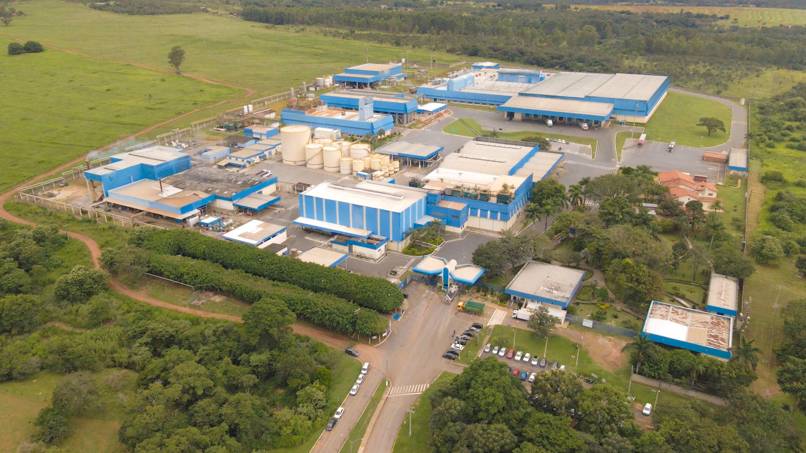
A Infinity é a infraestrutura operacional que planeja, coleta, transporta e destina os resíduos da sua operação — com frota própria, conformidade e valorização.
A jornada do resíduo
O problema não termina quando o resíduo sai da operação. É preciso planejar. Coletar. Transportar. Destinar. Comprovar. E transformar.
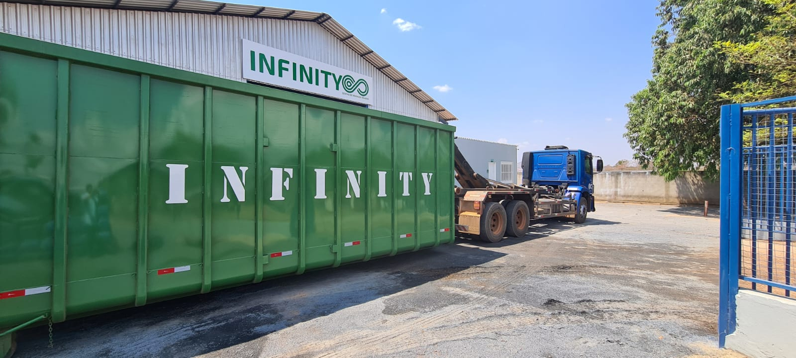
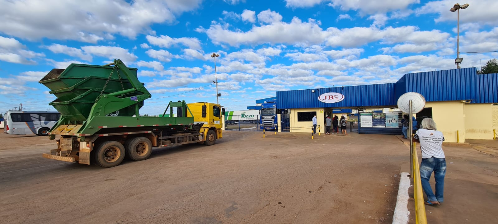
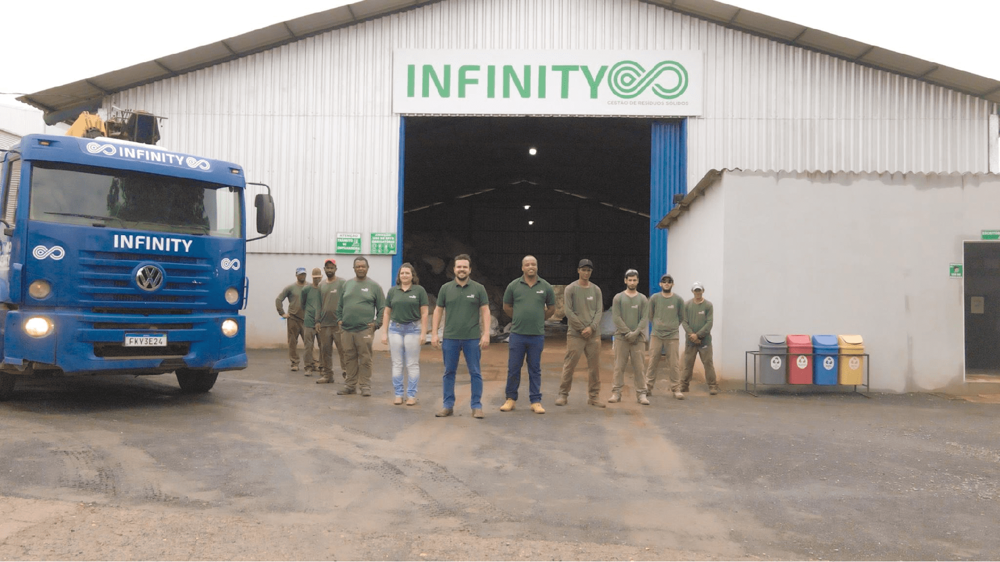
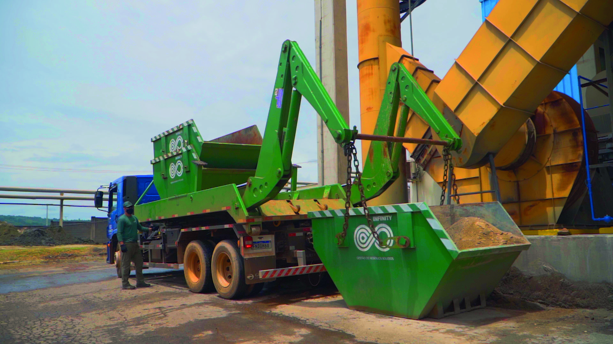
A Infinity
Não somos apenas quem retira o resíduo da sua porta. Somos a parceira operacional que assume a gestão completa — do mapeamento dos materiais aos requisitos regulatórios, da coleta pontual à destinação comprovada — para que resíduo deixe de ser custo e risco e passe a ser valor.
Como funciona
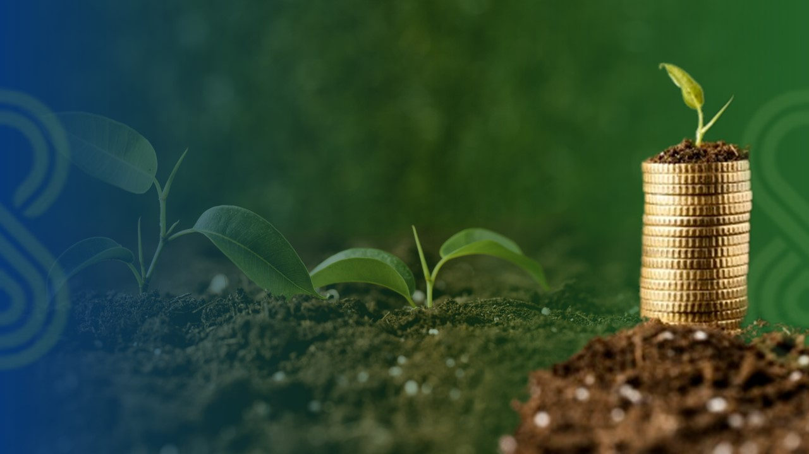
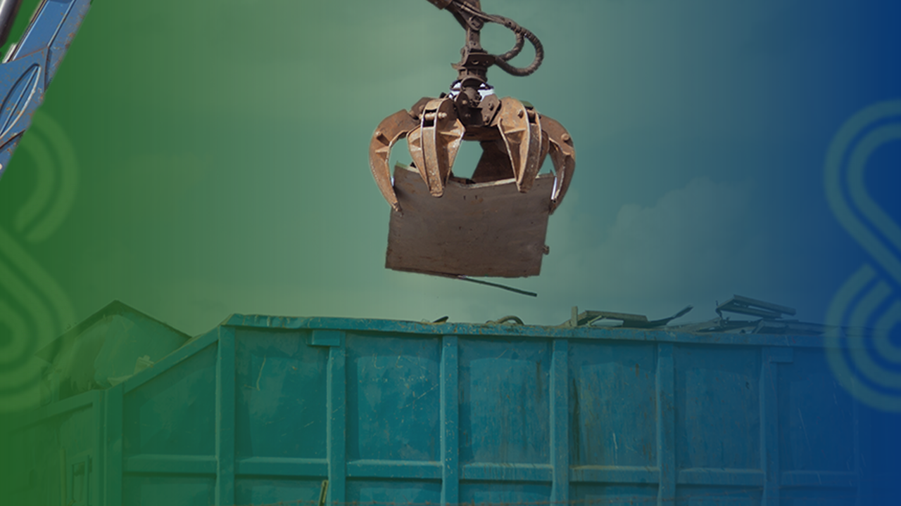
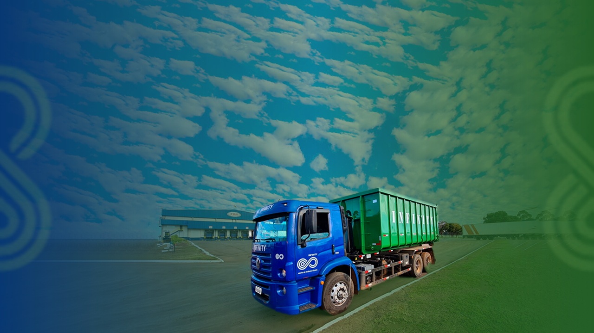
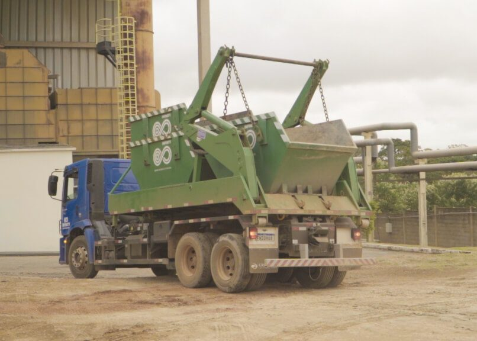
Mapeamos os resíduos da operação, os requisitos regulatórios aplicáveis e os riscos ocupacionais e ambientais — antes do primeiro caminhão sair.
Operação planejada para pequenos, médios e grandes geradores, com pontualidade e agilidade para que o resíduo nunca trave a produção.
Frota própria com Truck, Roll-on Roll-off, Garra Sucateira, Reboque Julieta e caçambas móveis de 5 a 39 m³ — o equipamento certo para cada carga.
Valorização, reciclagem e destinação ambientalmente adequada, com gestão documental para comprovar cada tonelada.
Soluções
Diagnóstico dos resíduos, requisitos e riscos antes de operar.
Rotina completa sob nossa responsabilidade, com indicadores.
Pontualidade para que o resíduo não interrompa sua operação.
Frota própria e equipamento certo para cada tipo de carga.
Materiais que seriam descarte voltam ao ciclo produtivo.
Destino ambientalmente adequado, com comprovação documental.
Rastreabilidade e conformidade para auditorias e certificações.
Lona, big bags, madeira, metal e orgânicos do campo e da fazenda.
Coleta programada e logística dimensionada para a planta.
Operação
Escala, força e precisão: cada material viaja no equipamento certo.

Versatilidade para rotas e volumes variados.
LONGA DISTÂNCIATroca rápida de caçambas, pátio sempre livre.
ALTA ROTATIVIDADEManuseio de sucata e volumosos com segurança.
CARGA PESADAComposição para dobrar a capacidade por viagem.
ESCALADe 5 a 39 m³ para cada perfil de gerador.
5 → 39 M³Onde operamos
Mapa ilustrativo das frentes de atuação. Toque em cada unidade para detalhes.
Impacto
toneladas de resíduos recicladas por ano — material que volta ao ciclo produtivo em vez do descarte.
ESG na prática
A gestão de resíduos é um dos pilares da sustentabilidade — e é onde a Infinity atua todos os dias, conectando cada pilar a rotinas concretas.
Quem confia
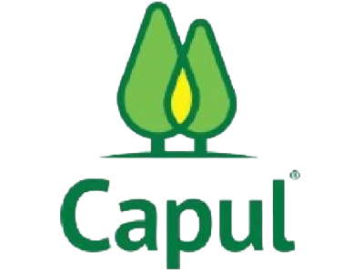
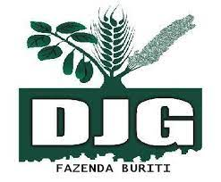
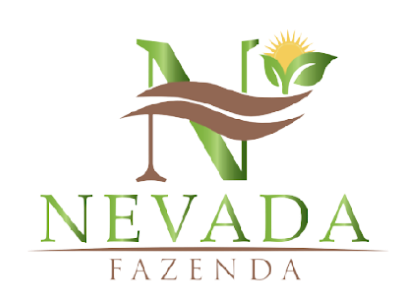
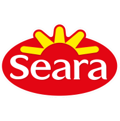
“Quando falamos em sustentabilidade, ela deixou de ser diferencial e passou a ser pilar de sobrevivência.”
— Referência editorial do setor agroindustrial
Cases
Conteúdo
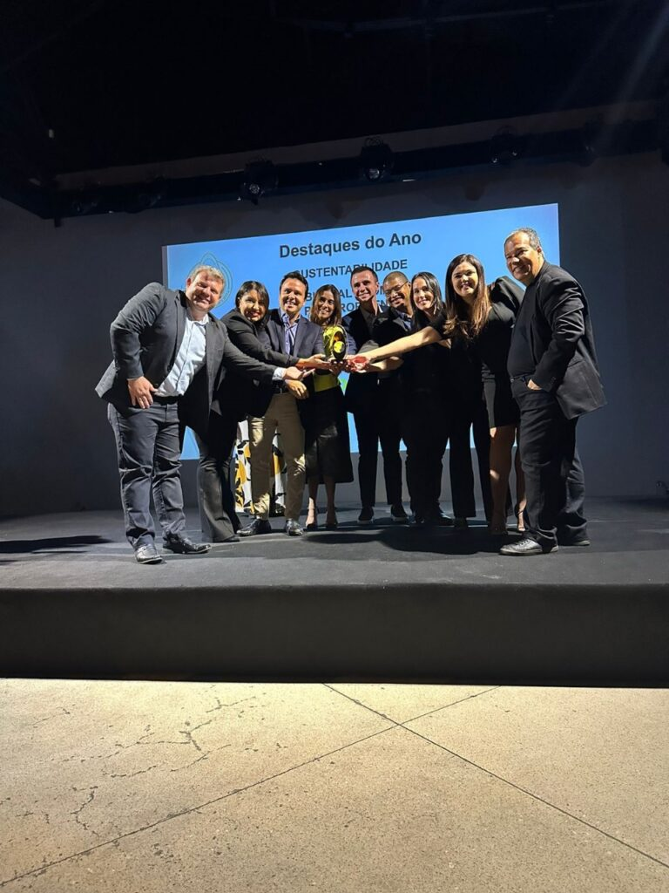
Como o campo está transformando passivo em matéria-prima.
Ler artigo →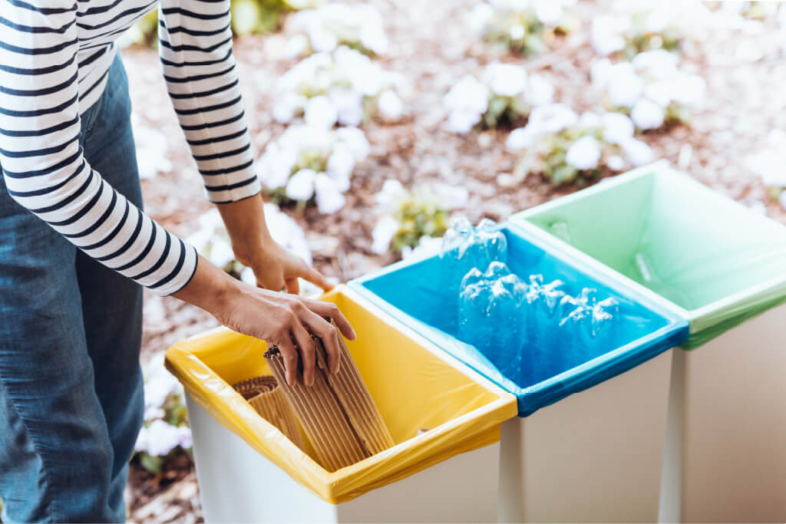
Por que destinação deixou de ser custo e virou operação.
Ler artigo →Comece agora
Vamos entender sua operação e construir a solução adequada para o seu negócio.